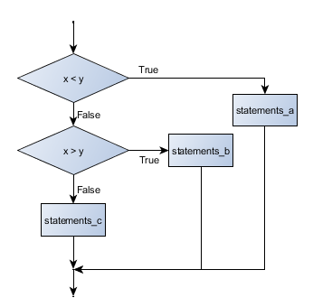

5. Conditionals¶
Programs get really interesting when we can test conditions and change the program behaviour depending on the outcome of the tests. That’s what this chapter is about.
5.1. Boolean values and expressions¶
A Boolean value is either true or false. It is named after the British mathematician, George Boole, who first formulated Boolean algebra — some rules for reasoning about and combining these values. This is the basis of all modern computer logic.
In Python, the two Boolean values are True and False (the
capitalization must be exactly as shown), and the Python type is bool.
>>> type(True) <class 'bool'> >>> type(true) Traceback (most recent call last): File "<interactive input>", line 1, in <module> NameError: name 'true' is not defined
A Boolean expression is an expression that evaluates to produce a result which is
a Boolean value. For example, the operator == tests if two values are equal.
It produces (or yields) a Boolean value:
>>> 5 == (3 + 2) # Is 5 equal to the result of 3 + 2? True >>> 5 == 6 False >>> j = "hel" >>> j + "lo" == "hello" True
In the first statement, the two operands evaluate to equal values, so the expression evaluates
to True; in the second statement, 5 is not equal to 6, so we get False.
The == operator is one of six common comparison operators which all produce
a bool result; here are all six:
x == y # Produce True if ... x is equal to y x != y # ... x is not equal to y x > y # ... x is greater than y x < y # ... x is less than y x >= y # ... x is greater than or equal to y x <= y # ... x is less than or equal to y
Although these operations are probably familiar, the Python symbols are
different from the mathematical symbols. A common error is to use a single
equal sign (=) instead of a double equal sign (==). Remember that =
is an assignment operator and == is a comparison operator. Also, there is
no such thing as =< or =>.
Like any other types we’ve seen so far, Boolean values can be assigned to variables, printed, etc.
>>> age = 18 >>> old_enough_to_get_driving_licence = age >= 17 >>> print(old_enough_to_get_driving_licence) True >>> type(old_enough_to_get_driving_licence) <class 'bool'>
5.2. Logical operators¶
There are three logical operators, and, or, and not,
that allow us to build more complex
Boolean expressions from simpler Boolean expressions. The
semantics (meaning) of these operators is similar to their meaning in English.
For example, x > 0 and x < 10 produces True only if x is greater than 0 and
at the same time, x is less than 10.
n % 2 == 0 or n % 3 == 0 is True if either of the conditions is True,
that is, if the number n is divisible by 2 or it is divisible by 3. (What do
you think happens if n is divisible by both 2 and by 3 at the same time?
Will the expression yield True or False? Try it in your Python interpreter.)
Finally, the not operator negates a Boolean value, so not (x > y)
is True if (x > y) is False, that is, if x is less than or equal to
y.
The expression on the left of the or operator is evaluated first: if the result is True,
Python does not (and need not) evaluate the expression on the right — this is called short-circuit evaluation.
Similarly, for the and operator, if the expression on the left yields False, Python does not
evaluate the expression on the right.
So there are no unnecessary evaluations.
5.3. Truth Tables¶
A truth table is a small table that allows us to list all the possible inputs,
and to give the results for the logical operators. Because the and and or
operators each have two operands, there are only four rows in a truth table that
describes the semantics of and.
a b a and b False False False False True False True False False True True True
In a Truth Table, we sometimes use T and F as shorthand for the two
Boolean values: here is the truth table describing or:
a b a or b F F F F T T T F T T T T
The third logical operator, not, only takes a single operand, so its truth table
only has two rows:
a not a F T T F
5.4. Simplifying Boolean Expressions¶
A set of rules for simplifying and rearranging expressions is called an algebra. For example, we are all familiar with school algebra rules, such as:
n * 0 == 0
Here we see a different algebra — the Boolean algebra — which provides rules for working with Boolean values.
First, the and operator:
x and False == False False and x == False y and x == x and y x and True == x True and x == x x and x == x
Here are some corresponding rules for the or operator:
x or False == x False or x == x y or x == x or y x or True == True True or x == True x or x == x
Two not operators cancel each other:
not (not x) == x
5.5. Conditional execution¶
In order to write useful programs, we almost always need the ability to check conditions and change the behavior of the program accordingly. Conditional statements give us this ability. The simplest form is the if statement:
The Boolean expression after the if statement is called the condition.
If it is true, then all the indented statements get executed. If not, then all
the statements indented under the else clause get executed.
Flowchart of an if statement with an else clause

The syntax for an if statement looks like this:
As with the function definition from the last chapter and other compound
statements like for, the if statement consists of a header line and a body. The header
line begins with the keyword if followed by a Boolean expression and ends with
a colon (:).
The indented statements that follow are called a block. The first unindented statement marks the end of the block.
Each of the statements inside the first block of statements are executed in order if the Boolean
expression evaluates to True. The entire first block of statements
is skipped if the Boolean expression evaluates to False, and instead
all the statements indented under the else clause are executed.
There is no limit on the number of statements that can appear under the two clauses of an
if statement, but there has to be at least one statement in each block. Occasionally, it is useful
to have a section with no statements (usually as a place keeper, or scaffolding,
for code we haven’t written yet). In that case, we can use the pass statement, which
does nothing except act as a placeholder.
5.6. Omitting the else clause¶
Flowchart of an if statement with no else clause

Another form of the if statement is one in which the else clause is omitted entirely.
In this case, when the condition evaluates to True, the statements are
executed, otherwise the flow of execution continues to the statement after the if.
In this case, the print function that outputs the square root is the one after the if — not
because we left a blank line, but because of the way the code is indented. Note too that
the function call math.sqrt(x) will give an error unless we have an import math statement,
usually placed near the top of our script.
Python terminology
Python documentation sometimes uses the term suite of statements to mean what we have called a block here. They mean the same thing, and since most other languages and computer scientists use the word block, we’ll stick with that.
Notice too that else is not a statement. The if statement has
two clauses, one of which is the (optional) else clause.
5.7. Chained conditionals¶
Sometimes there are more than two possibilities and we need more than two branches. One way to express a computation like that is a chained conditional:
Flowchart of this chained conditional
elif is an abbreviation of else if. Again, exactly one branch will be
executed. There is no limit of the number of elif statements but only a
single (and optional) final else statement is allowed and it must be the last
branch in the statement:
Each condition is checked in order. If the first is false, the next is checked, and so on. If one of them is true, the corresponding branch executes, and the statement ends. Even if more than one condition is true, only the first true branch executes.
5.8. Nested conditionals¶
One conditional can also be nested within another. (It is the same theme of composability, again!) We could have written the previous example as follows:
Flowchart of this nested conditional

The outer conditional contains two branches.
The second branch contains another if statement, which
has two branches of its own. Those two branches could contain
conditional statements as well.
Although the indentation of the statements makes the structure apparent, nested conditionals very quickly become difficult to read. In general, it is a good idea to avoid them when we can.
Logical operators often provide a way to simplify nested conditional statements. For example, we can rewrite the following code using a single conditional:
The print function is called only if we make it past both the
conditionals, so instead of the above which uses two if statements each with
a simple condition, we could make a more complex condition using the and operator. Now we only
need a single if statement:
5.9. The return statement¶
The return statement, with or without a value, depending on whether the
function is fruitful or void, allows us to terminate the execution of a function
before (or when) we reach the end. One reason to use an early return is if we detect an error
condition:
The function print_square_root has a parameter named x. The first thing
it does is check whether x is less than or equal to 0, in which case it
displays an error message and then uses return to exit the function. The
flow of execution immediately returns to the caller, and the remaining lines of
the function are not executed.
5.10. Logical opposites¶
Each of the six relational operators has a logical opposite: for example, suppose we can get a driving licence when our age is greater or equal to 17, we can not get the driving licence when we are less than 17.
Notice that the opposite of >= is <.
operator logical opposite == != != == < >= <= > > <= >= <
Understanding these logical opposites allows us to sometimes get rid of not
operators. not operators are often quite difficult to read in computer code, and
our intentions will usually be clearer if we can eliminate them.
For example, if we wrote this Python:
it would probably be clearer to use the simplification laws, and to write instead:
Two powerful simplification laws (called de Morgan’s laws) that are often helpful when dealing with complicated Boolean expressions are:
not (x and y) == (not x) or (not y) not (x or y) == (not x) and (not y)
For example, suppose we can slay the dragon only if our magic lightsabre sword is charged to 90% or higher, and we have 100 or more energy units in our protective shield. We find this fragment of Python code in the game:
de Morgan’s laws together with the logical opposites would let us rework the condition in a (perhaps) easier to understand way like this:
We could also get rid of the not by swapping around the then and
else parts of the conditional. So here is a third version, also equivalent:
This version is probably the best of the three, because it very closely matches the initial English statement. Clarity of our code (for other humans), and making it easy to see that the code does what was expected should always be a high priority.
As our programming skills develop we’ll find we have more than one way to solve any problem. So good programs are designed. We make choices that favour clarity, simplicity, and elegance. The job title software architect says a lot about what we do — we are architects who engineer our products to balance beauty, functionality, simplicity and clarity in our creations.
Tip
Once our program works, we should play around a bit trying to polish it up. Write good comments. Think about whether the code would be clearer with different variable names. Could we have done it more elegantly? Should we rather use a function? Can we simplify the conditionals?
We think of our code as our creation, our work of art! We make it great.
5.11. Type conversion¶
We’ve had a first look at this in an earlier chapter. Seeing it again won’t hurt!
Many Python types come with a built-in function that attempts to convert values
of another type into its own type. The int function, for example,
takes any value and converts it to an integer, if possible, or complains
otherwise:
>>> int("32") 32 >>> int("Hello") ValueError: invalid literal for int() with base 10: 'Hello'
int can also convert floating-point values to integers, but remember
that it truncates the fractional part:
>>> int(-2.3) -2 >>> int(3.99999) 3 >>> int("42") 42 >>> int(1.0) 1
The float function converts integers and strings to floating-point
numbers:
>>> float(32) 32.0 >>> float("3.14159") 3.14159 >>> float(1) 1.0
It may seem odd that Python distinguishes the integer value 1 from the
floating-point value 1.0. They may represent the same number, but they
belong to different types. The reason is that they are represented differently
inside the computer.
The str function converts any argument given to it to type
string:
>>> str(32) '32' >>> str(3.14149) '3.14149' >>> str(True) 'True' >>> str(true) Traceback (most recent call last): File "<interactive input>", line 1, in <module> NameError: name 'true' is not defined
str will work with any value and convert it into a string. As
mentioned earlier, True is Boolean value; true is just an ordinary variable name,
and is not defined here, so we get an error.
5.12. A Turtle Bar Chart¶
The turtle has a lot more power than we’ve seen so far. The full documentation can be found at http://docs.python.org/py3k/library/turtle.html or within PyScripter, use Help and search for the turtle module.
Here are a couple of new tricks for our turtles:
- We can get a turtle to display text on the canvas at the turtle’s current position. The method to do that is
alex.write("Hello"). - We can fill a shape (circle, semicircle, triangle, etc.) with a color. It is a two-step process.
First we call the method
alex.begin_fill(), then we draw the shape, then we callalex.end_fill(). - We’ve previously set the color of our turtle — we can now also set its fill color, which need not
be the same as the turtle and the pen color. We use
alex.color("blue","red")to set the turtle to draw in blue, and fill in red.
Ok, so can we get tess to draw a bar chart? Let us start with some data to be charted,
xs = [48, 117, 200, 240, 160, 260, 220]
Corresponding to each data measurement, we’ll draw a simple rectangle of that height, with a fixed width.

Ok, not fantasically impressive, but it is a nice start! The important thing here was the mental chunking, or how we broke the problem into smaller pieces. Our chunk is to draw one bar, and we wrote a function to do that. Then, for the whole chart, we repeatedly called our function.
Next, at the top of each bar, we’ll print the value of the data.
We’ll do this in the body of draw_bar, by adding t.write(' ' + str(height))
as the new third line of the body.
We’ve put a little space in front of the number, and turned the
number into a string. Without this extra space we tend
to cramp our text awkwardly against the bar to the left.
The result looks a lot better now:

And now we’ll add two lines to fill each bar. Our final program now looks like this:
It produces the following, which is more satisfying:

Mmm. Perhaps the bars should not be joined to each other at the bottom. We’ll need to pick up the pen while making the gap between the bars. We’ll leave that (and a few more tweaks) as exercises for you!
5.13. Glossary¶
- block
- A group of consecutive statements with the same indentation.
- body
- The block of statements in a compound statement that follows the header.
- Boolean algebra
- Some rules for rearranging and reasoning about Boolean expressions.
- Boolean expression
- An expression that is either true or false.
- Boolean value
- There are exactly two Boolean values:
TrueandFalse. Boolean values result when a Boolean expression is evaluated by the Python interepreter. They have typebool. - branch
- One of the possible paths of the flow of execution determined by conditional execution.
- chained conditional
- A conditional branch with more than two possible flows of execution. In
Python chained conditionals are written with
if ... elif ... elsestatements. - comparison operator
- One of the six operators that compares two values:
==,!=,>,<,>=, and<=. - condition
- The Boolean expression in a conditional statement that determines which branch is executed.
- conditional statement
- A statement that controls the flow of execution depending on some
condition. In Python the keywords
if,elif, andelseare used for conditional statements. - logical operator
- One of the operators that combines Boolean expressions:
and,or, andnot. - nesting
- One program structure within another, such as a conditional statement inside a branch of another conditional statement.
- prompt
- A visual cue that tells the user that the system is ready to accept input data.
- truth table
- A concise table of Boolean values that can describe the semantics of an operator.
- type conversion
- An explicit function call that takes a value of one type and computes a corresponding value of another type.
- wrapping code in a function
- The process of adding a function header and parameters to a sequence of program statements is often refered to as “wrapping the code in a function”. This process is very useful whenever the program statements in question are going to be used multiple times. It is even more useful when it allows the programmer to express their mental chunking, and how they’ve broken a complex problem into pieces.
5.14. Exercises¶
Assume the days of the week are numbered 0,1,2,3,4,5,6 from Sunday to Saturday. Write a function which is given the day number, and it returns the day name (a string).
You go on a wonderful holiday (perhaps to jail, if you don’t like happy exercises) leaving on day number 3 (a Wednesday). You return home after 137 sleeps. Write a general version of the program which asks for the starting day number, and the length of your stay, and it will tell you the name of day of the week you will return on.
Give the logical opposites of these conditions
a > ba >= ba >= 18 and day == 3a >= 18 and day != 3
What do these expressions evaluate to?
3 == 33 != 33 >= 4not (3 < 4)
Complete this truth table:
p q r (not (p and q)) or r F F F ? F F T ? F T F ? F T T ? T F F ? T F T ? T T F ? T T T ? Write a function which is given an exam mark, and it returns a string — the grade for that mark — according to this scheme:
Mark Grade >= 75 First [70-75) Upper Second [60-70) Second [50-60) Third [45-50) F1 Supp [40-45) F2 < 40 F3 The square and round brackets denote closed and open intervals. A closed interval includes the number, and open interval excludes it. So 39.99999 gets grade F3, but 40 gets grade F2. Assume
xs = [83, 75, 74.9, 70, 69.9, 65, 60, 59.9, 55, 50, 49.9, 45, 44.9, 40, 39.9, 2, 0]
Test your function by printing the mark and the grade for all the elements in this list.
Modify the turtle bar chart program so that the pen is up for the small gaps between each bar.
Modify the turtle bar chart program so that the bar for any value of 200 or more is filled with red, values between [100 and 200) are filled with yellow, and bars representing values less than 100 are filled with green.
In the turtle bar chart program, what do you expect to happen if one or more of the data values in the list is negative? Try it out. Change the program so that when it prints the text value for the negative bars, it puts the text below the bottom of the bar.
Write a function
find_hypotwhich, given the length of two sides of a right-angled triangle, returns the length of the hypotenuse. (Hint:x ** 0.5will return the square root.)Write a function
is_rightangledwhich, given the length of three sides of a triangle, will determine whether the triangle is right-angled. Assume that the third argument to the function is always the longest side. It will returnTrueif the triangle is right-angled, orFalseotherwise.Hint: Floating point arithmetic is not always exactly accurate, so it is not safe to test floating point numbers for equality. If a good programmer wants to know whether
xis equal or close enough toy, they would probably code it up as:if abs(x-y) < 0.000001: # If x is approximately equal to y ...
Extend the above program so that the sides can be given to the function in any order.
If you’re intrigued by why floating point arithmetic is sometimes inaccurate, on a piece of paper, divide 10 by 3 and write down the decimal result. You’ll find it does not terminate, so you’ll need an infinitely long sheet of paper. The representation of numbers in computer memory or on your calculator has similar problems: memory is finite, and some digits may have to be discarded. So small inaccuracies creep in. Try this script: